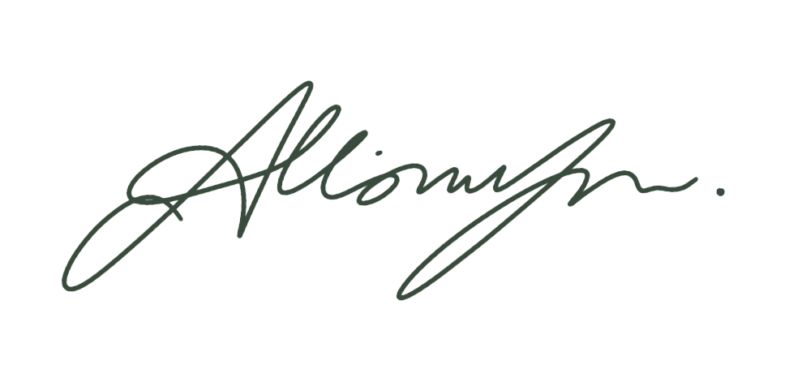

ABOUT -------
Hello, I am Allison!
FULL NAME: Allison Yu
SCHOOL: University of Maryland, College-Park
EMAIL: allison.a.yu@gmail.com
I'm a Computer Science major and Mathematics minor at the University of Maryland, passionate about robotics, computer vision, and technology's societal impact. In high school, I led the software subteam for my FTC team, contributed to my FRC team's computer vision systems, and promoted STEM education through outreach. Outside of academics, I enjoy caving, hiking, and camping.
